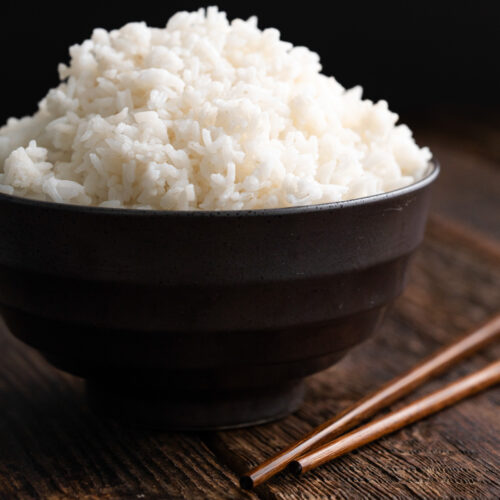

White Rice Bowl

White Rice Recipe
This is a simple white rice dish, nothing fancy however tasty, quick and easy to do.
Ingridients
- White rice
- butter
- Water
- Salt
Steps
- Rinse the rice if needed
- Add water, salt and the butter to the cooking pot until it starts boiling
- Add rice until spoon stands still without falling sideways
- Let the rice get semi-dry move and when it gets almost dry close the cooking pot
- Let it cook at slow fire
- Taste it once in a while until it's done